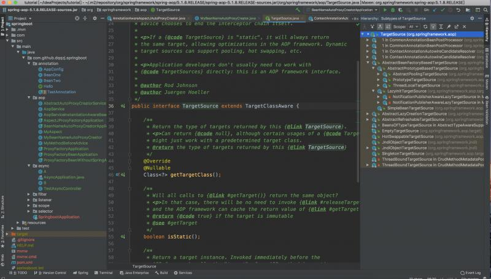

其实我第一次看见这个东西的时候也是不解，代理目标源不就是一个class嘛还需要封装干嘛。。。
其实proxy代理的不是target,而是TargetSource,这点非常重要，一定要分清楚！！！
通常情况下,一个代理对象只能代理一个target,每次方法调用的目标也是唯一固定的target。但是,如果让proxy代理TargetSource,可以使得每次方法调用的target实例都不同(当然也可以相同,这取决于TargetSource实现)。这种机制使得方法调用变得灵活,可以扩展出很多高级功能,如:单利，原型，本地线程，目标对象池、运行时目标对象热替换目标源等等。

public class SingletonTargetSource implements TargetSource, Serializable {
/** Target cached and invoked using reflection. */
private final Object target;
//省略无关代码......
@Override
public Object getTarget() {
return this.target;
}
//省略无关代码......
}从这个目标源取得的目标对象是单例的，成员变量target缓存了目标对象，每次getTarget()都是返回这个对象。
public class PrototypeTargetSource extends AbstractPrototypeBasedTargetSource {
/**
* Obtain a new prototype instance for every call.
* @see #newPrototypeInstance()
*/
@Override
public Object getTarget() throws BeansException {
return newPrototypeInstance();
}
/**
* Destroy the given independent instance.
* @see #destroyPrototypeInstance
*/
@Override
public void releaseTarget(Object target) {
destroyPrototypeInstance(target);
}
//省略无关代码......
}每次getTarget()将生成prototype类型的bean，即其生成的bean并不是单例的，因而使用这个类型的TargetSource时需要注意，封装的目标bean必须是prototype类型的。PrototypeTargetSource继承了AbstractBeanFactoryBasedTargetSource拥有了创建bean的能力。
public abstract class AbstractPrototypeBasedTargetSource extends AbstractBeanFactoryBasedTargetSource {
//省略无关代码......
/**
* Subclasses should call this method to create a new prototype instance.
* @throws BeansException if bean creation failed
*/
protected Object newPrototypeInstance() throws BeansException {
if (logger.isDebugEnabled()) {
logger.debug("Creating new instance of bean '" + getTargetBeanName() + "'");
}
return getBeanFactory().getBean(getTargetBeanName());
}
/**
* Subclasses should call this method to destroy an obsolete prototype instance.
* @param target the bean instance to destroy
*/
protected void destroyPrototypeInstance(Object target) {
if (logger.isDebugEnabled()) {
logger.debug("Destroying instance of bean '" + getTargetBeanName() + "'");
}
if (getBeanFactory() instanceof ConfigurableBeanFactory) {
((ConfigurableBeanFactory) getBeanFactory()).destroyBean(getTargetBeanName(), target);
}
else if (target instanceof DisposableBean) {
try {
((DisposableBean) target).destroy();
}
catch (Throwable ex) {
logger.warn("Destroy method on bean with name '" + getTargetBeanName() + "' threw an exception", ex);
}
}
}
//省略无关代码......
}可以看到，PrototypeTargetSource的生成prototype类型bean的方式主要是委托给BeanFactory进行的，因为BeanFactory自有一套生成prototype类型的bean的逻辑，因而PrototypeTargetSource也就具有生成prototype类型bean的能力，这也就是我们要生成的目标bean必须声明为prototype类型的原因。
public class ThreadLocalTargetSource extends AbstractPrototypeBasedTargetSource
implements ThreadLocalTargetSourceStats, DisposableBean {
/**
* ThreadLocal holding the target associated with the current
* thread. Unlike most ThreadLocals, which are static, this variable
* is meant to be per thread per instance of the ThreadLocalTargetSource class.
*/
private final ThreadLocal<Object> targetInThread =
new NamedThreadLocal<>("Thread-local instance of bean '" + getTargetBeanName() + "'");
/**
* Set of managed targets, enabling us to keep track of the targets we've created.
*/
private final Set<Object> targetSet = new HashSet<>();
//省略无关代码......
/**
* Implementation of abstract getTarget() method.
* We look for a target held in a ThreadLocal. If we don't find one,
* we create one and bind it to the thread. No synchronization is required.
*/
@Override
public Object getTarget() throws BeansException {
++this.invocationCount;
Object target = this.targetInThread.get();
if (target == null) {
if (logger.isDebugEnabled()) {
logger.debug("No target for prototype '" + getTargetBeanName() + "' bound to thread: " +
"creating one and binding it to thread '" + Thread.currentThread().getName() + "'");
}
// Associate target with ThreadLocal.
target = newPrototypeInstance();
this.targetInThread.set(target);
synchronized (this.targetSet) {
this.targetSet.add(target);
}
}
else {
++this.hitCount;
}
return target;
}
/**
* Dispose of targets if necessary; clear ThreadLocal.
* @see #destroyPrototypeInstance
*/
@Override
public void destroy() {
logger.debug("Destroying ThreadLocalTargetSource bindings");
synchronized (this.targetSet) {
for (Object target : this.targetSet) {
destroyPrototypeInstance(target);
}
this.targetSet.clear();
}
// Clear ThreadLocal, just in case.
this.targetInThread.remove();
}
//省略无关代码......
}ThreadLocalTargetSource也就是和线程绑定的TargetSource，可以理解，其底层实现必然使用的是ThreadLocal。既然使用了ThreadLocal，也就是说我们需要注意两个问题：
package com.github.dqqzj.springboot.target;
import org.springframework.aop.TargetSource;
import org.springframework.util.Assert;
import java.lang.reflect.Array;
import java.util.concurrent.ThreadLocalRandom;
import java.util.concurrent.atomic.AtomicInteger;
/**
* @author qinzhongjian
* @date created in 2019-08-25 12:43
* @description: TODO
* @since JDK 1.8.0_212-b10z
*/
public class DqqzjTargetSource implements TargetSource {
private final AtomicInteger idx = new AtomicInteger();
private final Object[] target;;
public DqqzjTargetSource(Object[] target) {
Assert.notNull(target, "Target object must not be null");
this.target = target;
}
@Override
public Class<?> getTargetClass() {
return target.getClass();
}
@Override
public boolean isStatic() {
return false;
}
@Override
public Object getTarget() throws Exception {
return this.target[this.idx.getAndIncrement() & this.target.length - 1];
}
@Override
public void releaseTarget(Object target) throws Exception {
}
}实现自定义TargetSource主要有两个点要注意，一个是getTarget()方法，该方法中需要实现获取目标对象的逻辑，另一个是isStatic()方法，这个方法告知Spring是否需要缓存目标对象，在非单例的情况下一般是返回false。
本文主要首先讲解了Spring是如果在源码层面支持TargetSource的，然后讲解了TargetSource的使用原理，接着对Spring提供的常见`TargetSource`进行了讲解，最后使用一个自定义的TargetSource讲解了其使用方式。